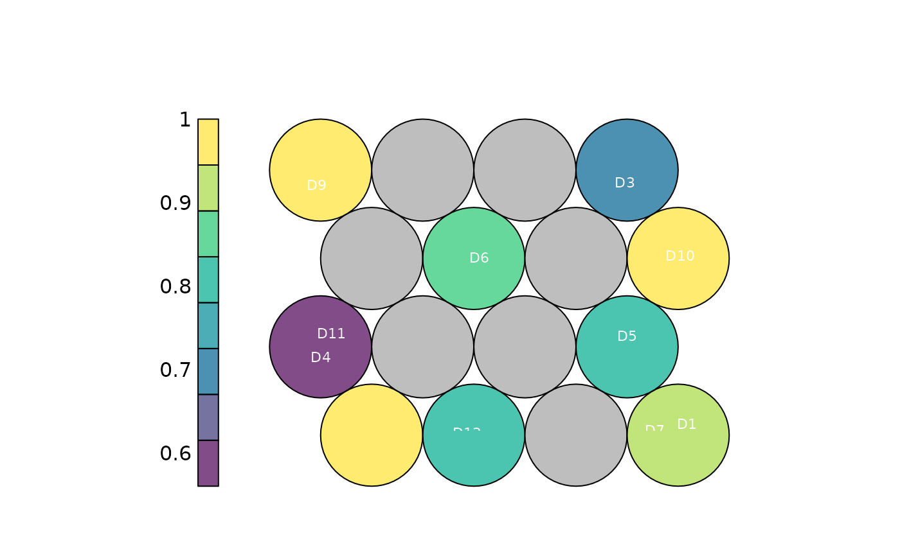

Draws the hexagonal SOM as a property map, colouring each node by the mean efficiency of the DMUs assigned to it, and (optionally) labels the nodes with the DMU names. Uses base graphics, so the plot is produced as a side effect on the active device.
Usage
plot_io_som(
som,
labels = "all",
max.overlaps.value = 10,
jitter_sd = 0.1,
seed = NULL,
transparency = 0.7,
subtitle = NULL,
title = "SOM: mean efficiency per node",
...
)Arguments
- som
A
dea_somobject fromcompute_som, or adea_dataobject / data frame, in which case the map is fitted first.- labels
Which DMUs to write on the map:
"all"(default),"none", or the name/id of a single DMU to label only that one.- max.overlaps.value
Accepted for API consistency; unused here (default
10).- jitter_sd
Standard deviation of the random jitter applied to label positions so co-located labels do not overlap (default
0.1).- seed
Optional single number making the label jitter reproducible without changing the session's random state.
- transparency
Opacity of the markers/areas, a single number in
[0, 1](default0.7).- subtitle
Optional subtitle shown beneath the title.
- title
Plot title.
- ...
When
somis data rather than adea_som, further arguments passed tocompute_som.
Examples
df <- data.frame(
dmu = paste0("D", 1:12),
i_x1 = runif(12, 2, 9), i_x2 = runif(12, 1, 5),
o_y1 = runif(12, 3, 9), o_y2 = runif(12, 1, 4)
)
som <- compute_som(df, xdim = 4, ydim = 4, seed = 1)
plot_io_som(som)
